How to Run PBS Jobs in PTP
Introduction
The PBS Eclipse plug-in, part of the Parallel
Tools
Platform (PTP), allows you to launch and monitor applications
on local or remote PBS (Portable Batch System) Distributed Resource
Managers.
This plugin consists of two parts. The first is the Eclipse PTP
plugin code which is responsible for the PTP views presented to the
user and the user's interaction with those views. The second part is a
resource manager (proxy), which is
responsible for communicating with the PTP PBS plugin code, submitting
the application as a job to the PBS batch system, and reporting
application
status to the PTP PBS plugin.
Requirements
In addition to having Eclipse and PTP installed, you need to have
the following software packages installed.
- CDT for Helios, available from the Eclipse download site;
- If you wish to run jobs locally (LINUX), you will need to have
installed a PBS system (PBS Pro,
PBS
Torque) there.
Installation
Nothing need be done beyond the normal intallation of the PTP
feature. The PBS plugin features a pre-built executable .jar
(pbs_proxy.jar) containing the proxy, which is then automatically
deployed to the chosen location (local or remote) when the
proxy is launched; there is nothing else to do by way of copying or
compiling/building on the target resource.
Creating a Resource Manager
The PBS Resource Manager has no general preferences to be set.
However, when an instance of the manager is created, the user has the
option to pre-define which batch-script template it will use, or to
create a custom template, as will be described below.
To create a resource manager instance, first open the Parallel Runtime perspective:
- From the Window menu,
select "Open Perspective" >> "Other"; in the dialog box, choose
"Parallel Runtime", then "OK":
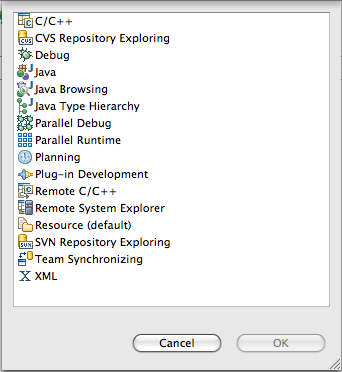
- In the "Resource Managers" view, right- (control-) click for the
"Add Resource Manager" action:
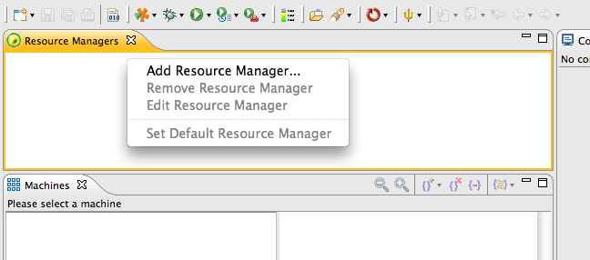
- You should now see the first of five wizard pages appear in a
dialog; this one allows you to select which type of resource manager to
instantiate:
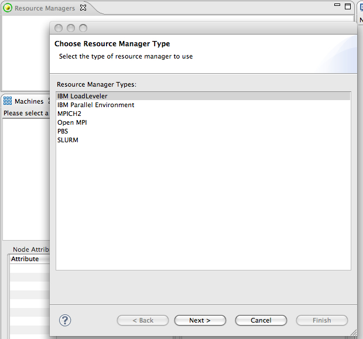
- Choose "PBS", and click "Next". The following page allows
you to set up the PBS provider. The location can be either
local or remote; in the former case, nothing else need be done on this
page. For remote PBS, you will need to configure the connection
to the host/resource. For this case, under "Remote service
provider", select the "Remote Tools" option:
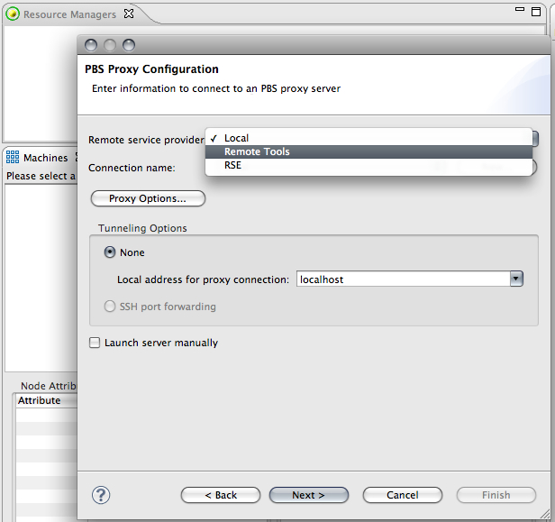
Next, click the "New" button to bring up the connection dialog
:
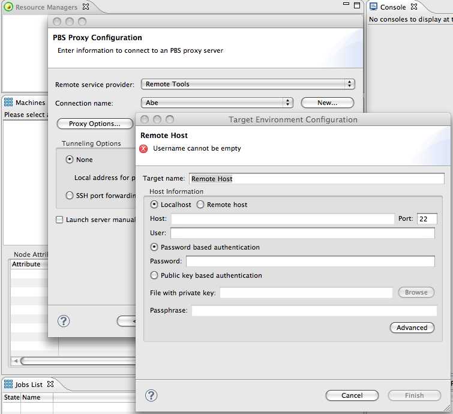
Here you can name the resource, provide its address, and set up the
SSH connection with the user name and password, or choose public key
authentication.
When you have finished entering the appropriate values, click
"Finish" to return to the wizard page. Also be sure to choose the "SSH port
forwarding" option.
- Click "Next" to bring you to the template configuration
page. Here you can set up which batch template will be used to
configure launches for this resource manager (this can, however, be
changed in the Run Configuration). You can also use this page to
create, modify, or delete templates.
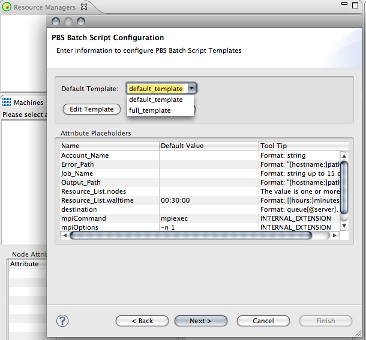
Two pre-defined templates are provided with the PTP PBS
plugin: the default_template
has only a minimal set of configurable job attributes; the full_template provides all of the
standard PBS job attributes, and also allows you to insert additional
commands into the batch script. In this view, the configurable
values of the template are displayed, along with the the tool tip, if
any, that can be seen in the run configuration view by hovering over
the attribute name.
To create a new template, click the "Edit Template" button.
This pops up a dialog asking you which template to display:
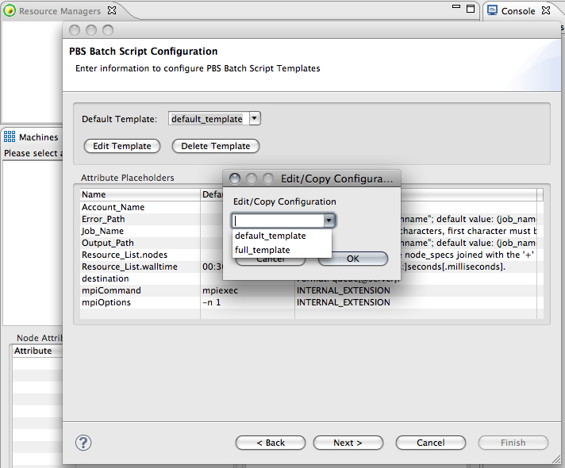
If you are modifying a pre-existing template, just choose the
template from the drop-down list; to create a new template, choose the
template on which you wish to base the customized one. This now
opens a dialog which allows you to edit and save the changes.
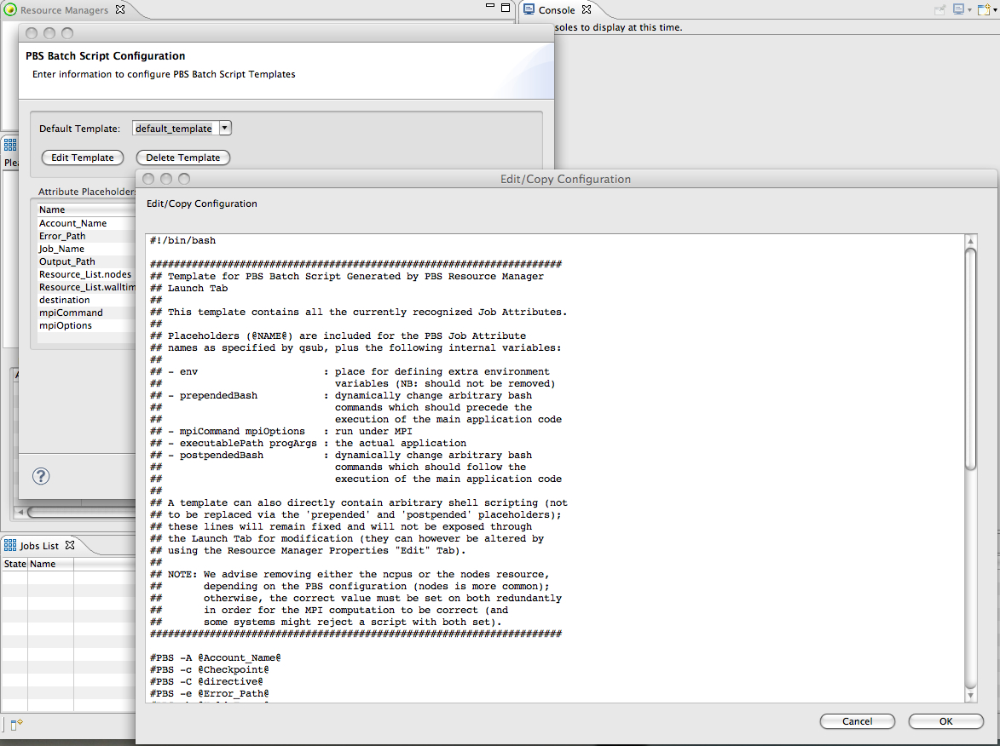
A fuller description of the template contents can be found below ...
To remove a template, use the "Delete Template" button.
Note: the two provided
templates can neither be edited nor deleted; attempting to do so will
display an error message.
- Clicking "OK" should persist the changes and add the new template
to the drop-down list (in the current example, alr_template was created):
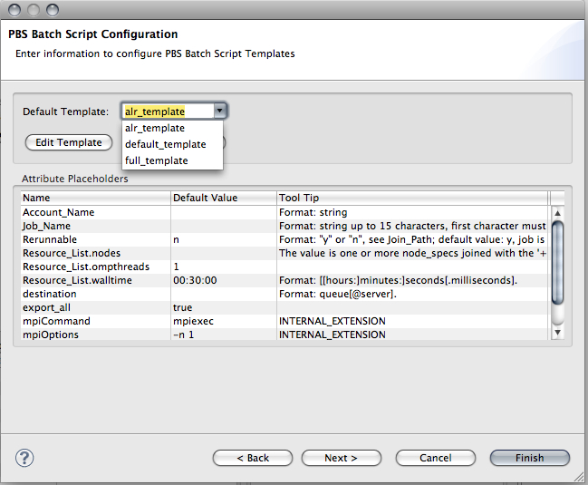
The new template is thus available for
use by any PBS resource manager instance.
- The last two pages of this wizard allow you to name the resource
manager and create its configuration (or add it to an empty
pre-existing one). After you have completed the wizard
configuration and clicked "Finish", the new resource manager should
appear in the Resource Managers view.
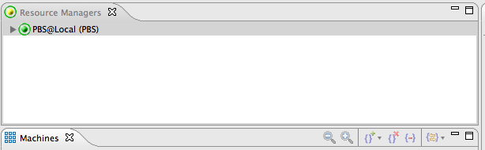
We are now ready to deply this resource manager and submit a job to
it. The following section demonstrates how to use the PBS launch
configuration.
Submitting a Job to PBS
While not strictly necessary, we will first start the PBS resource
manager before proceeding to the creation of a run configuration.
- Select the PBS resource manager and choose "Start Resource
Manager":
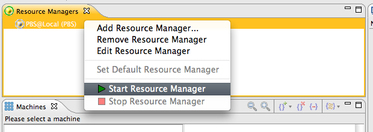
In order to launch a job, you will also have to have defined an
appropriate project, either a C/C++ project using CDT, or a Fortran
project using Photran, and to have compiled an executable for it.
Next, we will create a configuration for launching jobs to this
manager. The procedure is identical to that for creating any Run
Configuration in Eclipse.
- Either select Run
>> "Run Configurations ..." using the menu, or click on the small
arrow to the right of the Run icon on the toolbar:
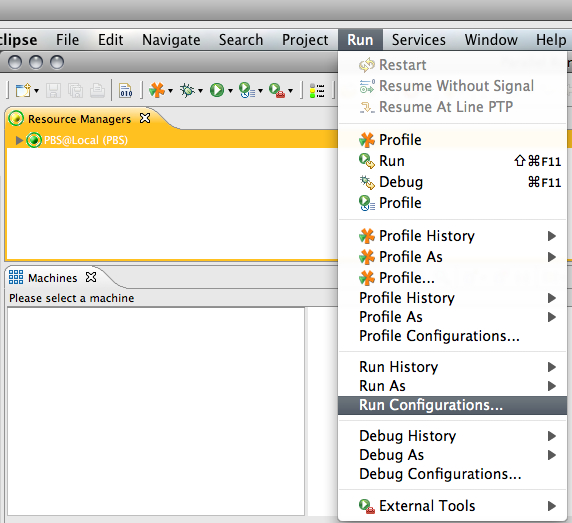
- From the list of configuration types displayed, right- (control-)
click on "Parallel Application", and choose "New". A new
configuration will be added and the tab viewer associated with it
displayed. If only one resource manager is available from the list
in the Resource Managers view, the "Resource" tab will be automatically
configured with it; otherwise, you will need to select a resource
manager from the drop down list at the top of the view. Here, we
have selected the PBS@Local manager, whose template was defined to be
the customized alr_template;
we have also renamed this configuration "PBS_alr":
Note at this point several things: first, the "Apply" button,
which allows you to save changes, is not yet enabled. This is
because there are still "errors" to be fixed before the configuration
is considered valid. These errors are displayed at the top of the
panel proceeded by an error icon. In our case we see displayed
there "[Application]: Application program is not
specified". The Application
tab is warning us that we need to tell the manager which application it
will run. Clicking on the tab switches to that wizard page, where
you can choose the project (at least one project in the workspace needs
to be defined, as mentioned above) and point the "Application program"
to the executable path (if your proxy is remote, the remote file system
will be accessed by the "Browse" button). In the current release,
you also need to define the debugger (this will be fixed in a
subsequent release). However, even if there is no debugger
available, all you need to do is open the Debugger tab, select the debugger
(usually "SDM") and give it a dummy path (any file will do). You
should now be able to save the configuration by clicking "Apply".
The PBS Launch Tab
The tab, which allows you to configure the job -- in more specific
terms, generate the script to be given to the PBS batch system via the
proxy -- is generated from the chosen template, and consists of three
sections. The top panel allows you to switch out the current
template for any of the other available ones, and also allows you to
see what the batch script to be given to the proxy will look like, on
the basis of the actual values you have provided. The second
panel allows you to choose among no MPI command and the two standard
ones (mpiexec, mpirun). If the chosen template provides for
arbitary commands to be added to the script, the two "Edit" buttons
will appear; clicking on these brings up a dialog in which you may
enter any arbitrary commands that will be understood by the bash shell. The bottom panel
exposes the "#PBS" directives included in this template, and allows you
to provide their values: "spinners" are provided for integer
values, selection boxes for values with a fixed set of choices,
checkboxes for boolean (true/false, yes/no) values, and text boxes for
all the other types. Hovering over the attribute name will
often give you additional information on formatting for that particular
attribute.
Persistence
When you click "Apply", the values you entered are saved to persistent
store; however, there are actually two different mappings to be aware
of in this context. The template values, such as "MPI Command",
bash commands, job attribute values, etc., belong to this particular Run Configuration (in our example, PBS_alr); the choice of template,
however, belongs to the Resource
Manager (in our example, PBS@Local).
To illustrate this, let us suppose we had two different configurations,
PBS_A and PBS_B; let us further suppose they
both use the PBS@Local
manager:
- PBS_A changes the
template for this resource manager. Inside PBS_A, you will now see the tab
rebuilt for that template, but with the values (e.g., Account_Name, etc.) that were
originally there. If you switched (after saving these changes) to
PBS_B, you would now see
its orignal values reappear inside the new template as well.
- Now let us say that PBS_B
actually swaps out its resource manager for a different (PBS)
one. Again, it will see the original attribute values reappear
inside the template associated with the new resource manager. PBS_A, however, will remain unaffected.
Back to Table of Contents